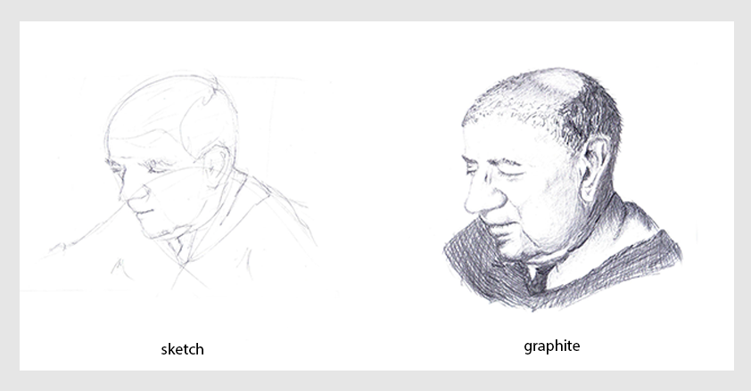
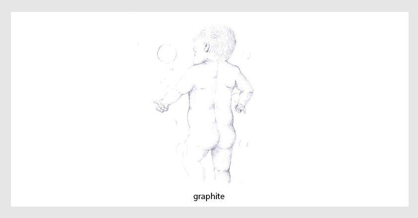
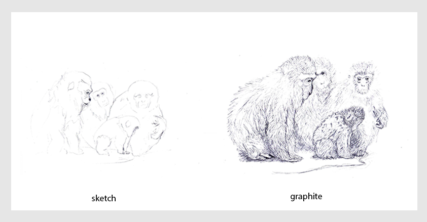
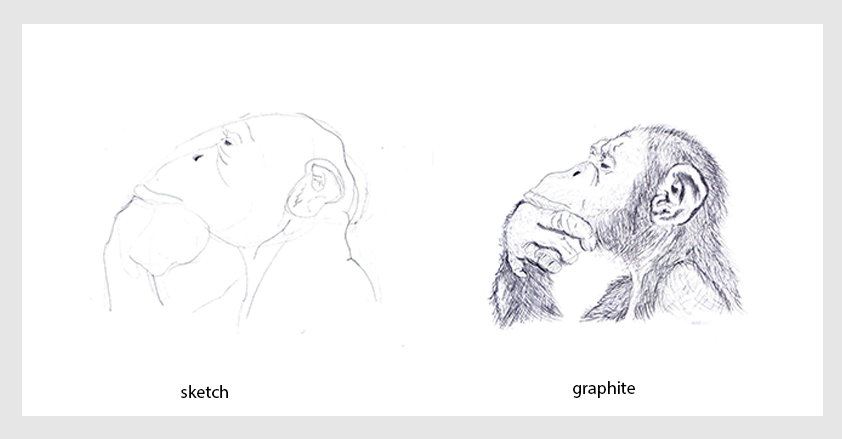
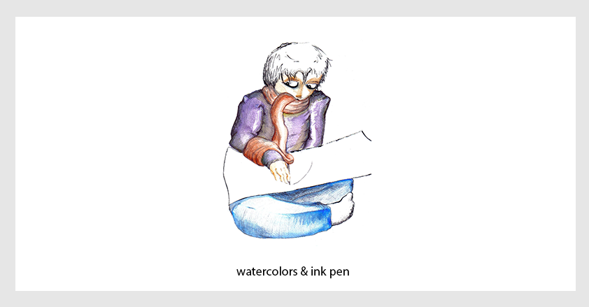
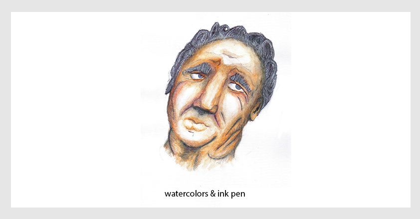
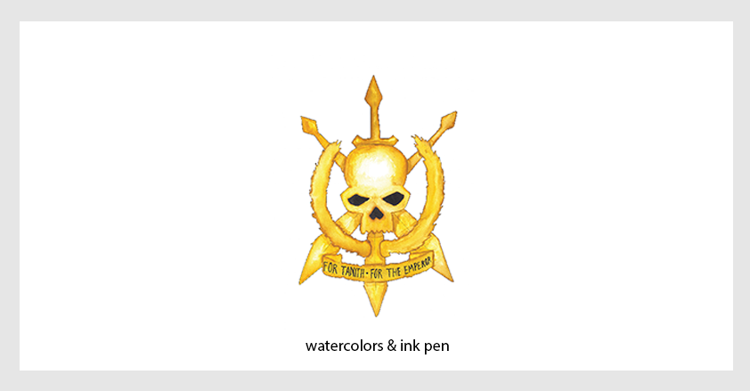
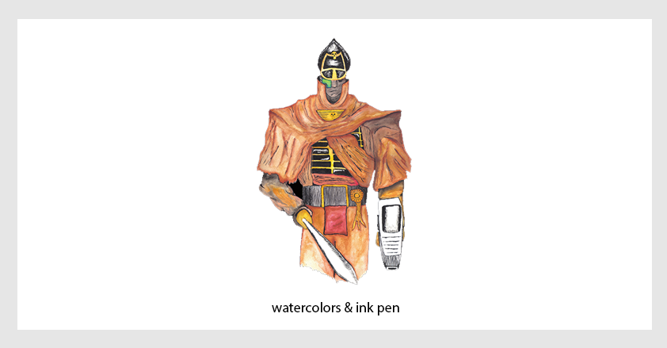
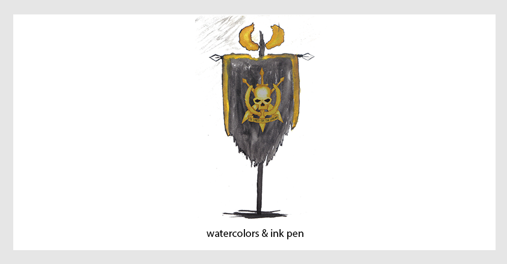

Esta sessão inclui ilustrações feitas em diferentes técnicas, tais como: grafite, aquarela, guache e acrílica.
≈
Δ
>
<

Theodor W. Adorno
Ele foi um grande filósofo e ainda é um sujeito muito interessante.

Bebê
Um bebê brinca junto a bolhas de sabão.

Macacos da Neve
Uma família de macacos conforta um jovem macaco que observa o lago congelado.

O Macaco Pensador
Macacar ou não macacar.

Um Artista Confortável
As vezes o cachecol se mete no caminho.

A Cabeça
É uma cabeça grande e expressiva!

Símbolo de Tanith
Poucos que enfrentaram este símbolo sobrevivaram para contar suas histórias.

O Comissário
Ele grita ordens e avança em nome do imperador.

A Bandeira
Ela esvoa em meio a fumaça e ruínas.